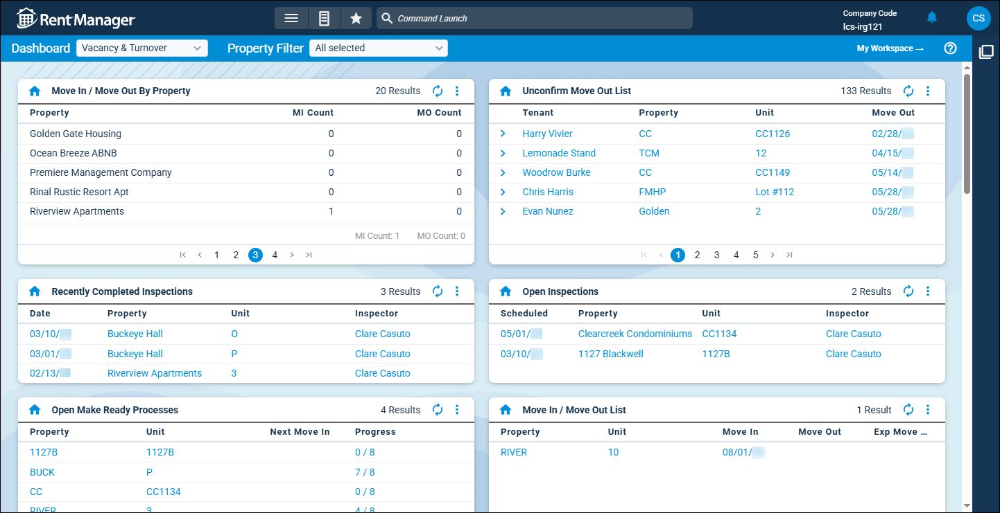

Source: https://rmxhelp.rentmanager.com/Topics/Express/KB/LP-DT-Vacancy-Turnover.htm
Vacancy and Turnover Dashboard Tile
Rent Manager includes several dashboard tiles that provide at-a-glance data and analysis to help you track unit turnover and minimize prolonged vacancy. With these dashboard tiles, you can view trends such as the average time it takes to prepare a unit to be rented out, the differences between unit market rent and the actual recurring rent charges for all occupied units, and the percentage of units rented for each month compared to the potential occupancy.

Add the following vacancy and turnover-related tiles to your dashboard to help reduce losses:
| Dashboard Tile | Description |
|---|---|
|
Average Days To Turn |
A graph or list of the average number of days it takes to prepare a unit to be rented out displays. This tile helps you track the average number of days all units have specific unit statuses for each month. |
|
Average Days Vacant Trend |
A graph or list of the average number of days vacant all units were for each month displays. This tile helps you track, on average, how many days a unit is vacant after a move out occurs in a given period. |
|
Market To Actual Rent Comparison |
A graph or list of the differences between unit market rent and the actual recurring rent charges for all occupied units displays. Those charges include all active rent charges for tenants whether those charges are established at the tenant, unit, unit type, or property level. This comparison tile identifies the gross potential rent (GPR) for each unit and allows you to track lost profits based on the amounts that are being charged to tenants through their leases. |
|
Move In/Move Out By Property |
The total move ins and move outs per property and totals for all properties displays. This tile helps you track scheduled or expected move ins and move outs, indicated on the tenant details page and occurring within a specified number of days. |
|
Move In/Move Out List |
A graph or list of the property and the unit at which the move in or move out is occurring displays, as well as the relevant dates. This tile helps you track scheduled or expected move ins and move outs occurring within a specified number of days. |
|
Occupancy Trend |
A graph or list of the percentage of units rented for each month compared to the potential occupancy displays. This tile also helps you track the percentage of economic occupancy for each month that represents the amount of rent paid prior to the end of the month. |
|
Open Inspections |
The scheduled date, inspector name, and the property and unit associated with each open inspection displays. This tile helps you track inspections that are currently outstanding at selected properties. |
|
Open Make Ready Processes |
The unit, when the next tenant is due to move into the unit, and how far along the unit is in the turnover process displays. This tile helps you track units that are assigned to an active make-ready process and how far each unit has progressed in its process versus how many steps are in its assigned process (completed/total). |
|
Recent Survey Responses |
The name of the tenant who submitted a survey response, the name of the survey, and the date that the tenant submitted their response displays. A property manager may set this tile up to display all surveys for any properties they manage, while a service manager could filter it to display only service-related surveys submitted to properties at which they work. |
|
Recently Completed Inspections |
The date, property, unit, and the name of the user who performed the inspection display. This tile helps you track inspections that took place at selected properties and that were closed within a set number of days. |
|
Unconfirm Move Out List |
The tenant, property, unit, and the move out and lease end dates display. This tile helps you track tenants who have an unverified Move Out date on a lease. |
|
Unit Status |
A graph or list of the property associated with a unit, the name of the unit, and the unit's status display. This tile helps you track the unit status assigned to unoccupied units to monitor their condition. |
|
Vacancy By Property |
The property, total number of vacant units at the property, total number of units at the property, and percentage of vacant units at the property display. This tile helps you track the number of vacant units, including those with unit status types set to Show As Vacant, at the selected properties. |
|
Vacancy List |
The property, unit, unit type, market rent, and the total number of days since the last time the unit was occupied display. This tile helps you track which units are not currently occupied and how long the units have remained vacant. |
|
Vacancy Trend |
A graph or list of the date and number of vacant units as of the month display. This tile helps you track vacant units at a glance. |